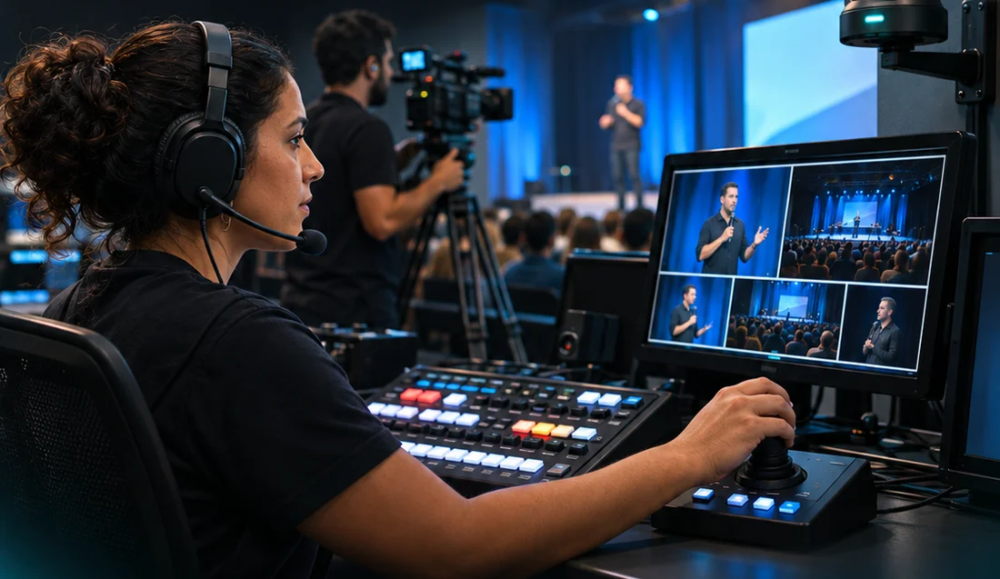

A mensagem continua
além das paredes.
Cultos, congressos e encontros com atenção à fala, à música e aos momentos que importam para sua comunidade.
Planejar uma transmissão ↗Conecte quem está presente a quem acompanha de longe. Imagem, áudio e direção ao vivo para dar à sua mensagem uma presença profissional.
Quero transmitir meu evento ↗Conte sua ideia. Vamos desenhar a produção com você.

NOS BASTIDORES DA CONEXÃOUma transmissão precisa fazer sentido para quem assiste. A Tracktion combina captação, operação e direção para apresentar seu evento com clareza, ritmo e cuidado.
Cultos, congressos e encontros com atenção à fala, à música e aos momentos que importam para sua comunidade.
Planejar uma transmissão ↗Conferências, palestras e eventos com uma produção pensada para a experiência de quem acompanha pela tela.
Conversar sobre meu evento ↗Competições e encontros esportivos com enquadramentos e direção voltados para o que acontece em campo ou na quadra.
Planejar a cobertura ↗Pessoas no comando. Tecnologia a serviço do seu evento.
Alinhamos objetivo, público, data, local e canais de exibição.
Definimos captação, áudio, equipe e condições de internet necessárias. Tudo detalhado na proposta.
Organizamos a montagem e os testes previstos para a produção contratada.
Operamos as câmeras e a direção da transmissão para acompanhar os momentos do evento.
Preencha os detalhes e envie sua solicitação pelo WhatsApp. Assim, começamos a conversa entendendo o que você precisa.
Tracktion Streaming
Atendimento a partir de União dos Palmares · AL
Disponibilidade e deslocamento sob consulta.
O valor depende da duração, do local, da equipe e da estrutura necessária. Envie os detalhes do evento para receber uma proposta com o escopo e o investimento.
A conexão precisa ser avaliada antes da transmissão. No alinhamento, definimos os requisitos e quem será responsável por cada recurso.
A produção pode combinar câmeras convencionais e PTZ, com operação humana. A configuração depende do projeto contratado.
Informe os canais que você pretende usar, como YouTube ou outras plataformas. Validamos compatibilidade, acesso às contas e condições técnicas antes de fechar o escopo.
Assim que tiver uma previsão de data e local. A contratação depende da disponibilidade da equipe e do tempo necessário para planejar a operação.